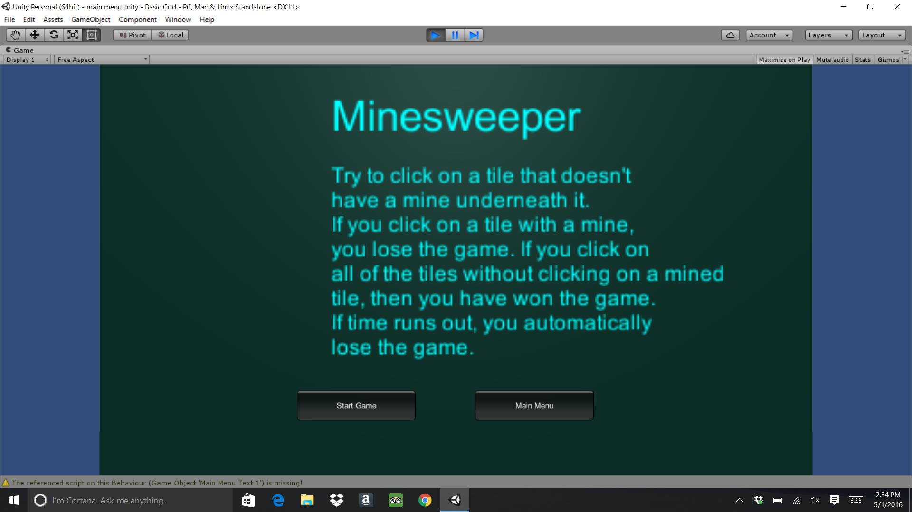

The main menu itslef is a plane object. It dislays the instructions for the game and two buttons, one to start the game and one to return to the overall game main menu. The text that appears on the main menu are 3D text objects

The material that was used was a cyan color to change the color of the text that displayed on the main menu. The components that were used were the Transform, Mesh Renderer, Mesh Collider, Plane(Mesh Filter), Text Mesh and the Box Collider components, as well as the Buttons script.
void Start() -> The start method sets the color of the instructions that are on the main menu.
void OnGUI() -> This method displays the button that start the game and the button that returns to the overall main menu.